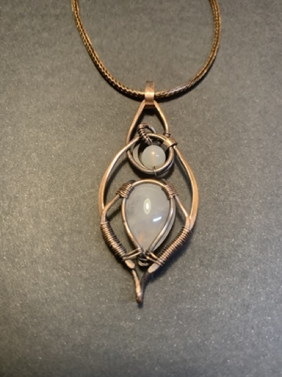
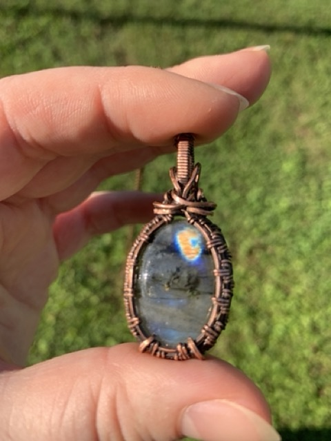
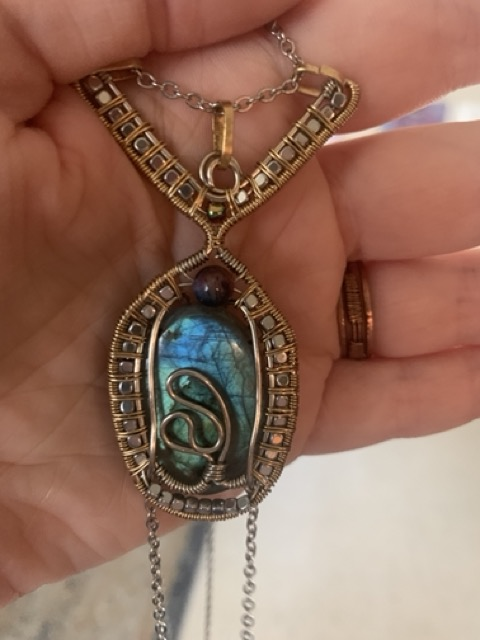
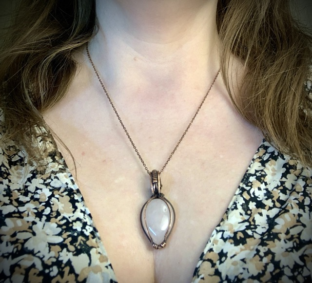
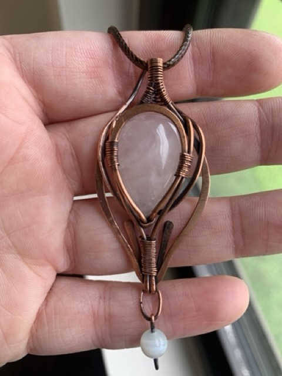
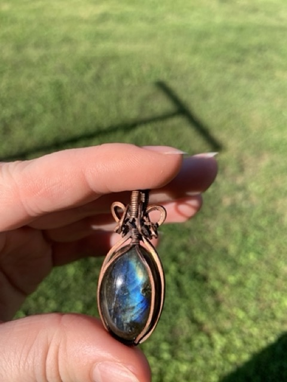

For artists, makers, and dreamers, solitude is not just a state of being—it is a sacred workspace. True creativity often thrives away from the noise of the world, in those quiet hours when you sit alone with your thoughts, your tools, and your materials.
However, maintaining deep concentration and keeping the creative spark alive during long hours of solitary work can sometimes be challenging. That is where the subtle energy of natural crystals can help. By placing certain gemstones on your work desk or wearing them as personal talismans, you can create a peaceful mental sanctuary.
Here are the best stones to help creative minds maintain their focus, block out distractions, and channel deep inspiration during their moments of solitude.
1. Clear Quartz: The Ultimate Mind Clarifier
When you work alone for hours, it is easy for your mind to become cluttered with doubts or too many ideas at once. Clear Quartz is often called the “Master Healer” and the ultimate stone for mental clarity.
- How it helps creativity: Clear Quartz acts like a clean canvas for your mind. It amplifies your intentions, filters out confusing thoughts, and allows you to look at your project with fresh eyes.
- The Magic of Inclusions: Many natural quartz crystals are not perfectly clear; they contain internal cracks, misty clouds, and tiny fractures. In mystical jewelry making, these imperfections are not flaws—they are beautiful hidden landscapes. Looking at a unique quartz stone from different angles can help you slow down, breathe, and let a completely unexpected design idea come to your mind.
2. Labradorite: The Stone of Hidden Inspiration
If Quartz brings clarity, Labradorite brings the raw, untamed magic of the imagination. It is a shape-shifting mineral that perfectly mirrors the creative process itself.
- How it helps creativity: At first glance, a piece of raw or cabochon labradorite might look quiet and dark gray. But as you turn it, it suddenly reveals dazzling flashes of blue, green, and gold. This stone is a wonderful reminder that brilliant ideas often hide inside quiet, unmapped places.
- For Solitary Seekers: Labradorite is deeply connected to intuition and transformation. It helps you connect with your inner magic without needing validation from the outside world. Wearing labradorite earrings or a pendant while wire wrapping, painting, or crafting helps maintain a shield of inspiration around your workspace, turning your solitude into pure artistic power.
3. Hematite: The Grounding Anchor
When a creative person plunges deep into a new project, their thoughts can sometimes fly too high, leaving them feeling overwhelmed, scattered, or physically exhausted. This is when you need a strong anchor.
- How it helps creativity: Hematite is a heavy, metallic stone known for its grounding properties. It absorbs restless, anxious energy and helps you stay present in the physical world.
- In Everyday Work: Hematite acts as a bridge between abstract ideas and physical manifestation. It gives you the steady endurance needed to sit at your desk, hammer copper wire, and patiently polish every tiny detail until your creation is finished. Combined with warm copper or silver, hematite brings balance to a busy maker’s mind.
How to Use Your Creative Talismans
To get the most out of these stones, you do not need complex rituals. Simply introduce them into your creative routine:
- Desk Companions: Keep a small scattering of natural cabochons or raw crystals right on your workbench, next to your wire cutters, brushes, or sketchbooks.
- Wearable Anchors: Wearing handmade gemstone jewelry allows the stone to touch your skin throughout the day. Every time you catch a glimpse of a blue labradorite flash on your hand or feel the cool weight of a pendant, it serves as a gentle reminder to return to your breath and refocus your creative energy.
Explore Handcrafted Creative Amulets
Every piece of jewelry in our shop is created in deep solitude, born from looking at unique natural minerals until their story unfolds. Discover our latest collection of copper and stone talismans designed to support your personal journey of focus and inspiration.

Rose Quartz Botanical Pendant

Oval Labradorite Pendant Necklace

Labradorite Pendant with hematite beads

Antique Copper Wire Wrapped Rose Quartz Pendant

Copper Wire Wrapped Rose Quartz Necklace with Agate Drop
